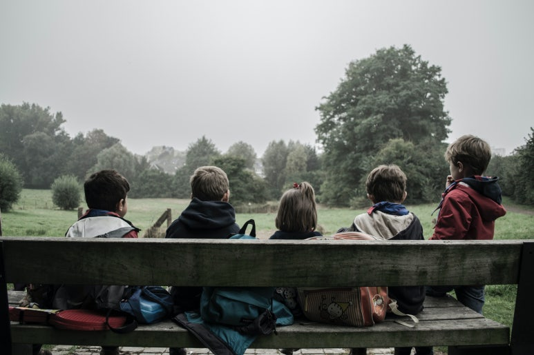

을유 시리즈
-
 책을 쓰는 과학자들
책을 쓰는 과학자들#5. “새들은 다 어디로 갔을까?”
『과학혁명의 구조』가 학계에 큰 영향을 주었다면, 같은 해에 출간된 또 다른 책은 전 세계에 더욱 막대한 영향력을 떨치고 대중에게 비교적 생소한 과학적 탐구 주제였던 환경주의를 소개했다. 공공 정책을 변화시키고 사람들의 전반적인 인식 수준도 높인 이 책이 수백만 명의 죽음에 간접적인 책임이 있다고 주장하는 사람들도 있다. 또한 이 책의 저자는 여성이었다.
-
게르하르트 리히터
#5. “아름다운 행운의 빛” 컬러패
리히터는 뒤셀도르프에 있는 페인트 전문점 조넨헤어초크Sonnenherzog에서 그림 도구를 구입했다. 그리고 그곳에 전시된 페인트 색상표를 보고 새로운 그림에 대한 영감을 얻었다.
-
고통을 말하지 않는 법
#5. 아이들은 기억한다
어느 날, 심야 라디오 방송에 다시아 블랙이 나온다. 그는 제2차 세계 대전 때 훤히 공개된 은신처에 머물며 살아남은 여성이다. 그는 아리아인 아이로 위장하고 폴란드인 기독교도 가족과 함께 살았고, 무릎을 꿇은 채 ‘올바른 신’에게 기도했으며 , 그렇게 자신의 새로운 정체성을 너무도 꽉 부여잡은 나머지 한동안 자신의 진짜 이름을 기억하지 못했다고 한다.
-
컬트
#5. 마셜 애플화이트와 천국문
1970년대 초의 언젠가, 마셜 허프 애플화이트와 보니 루 네틀스는 유사 종교를 하나 만들어 냈다. 이들이 ‘천국문’이라고 명명한 이 신생 종교는 대중 과학 소설, 애플화이트의 유년기 체험 속 장로교,